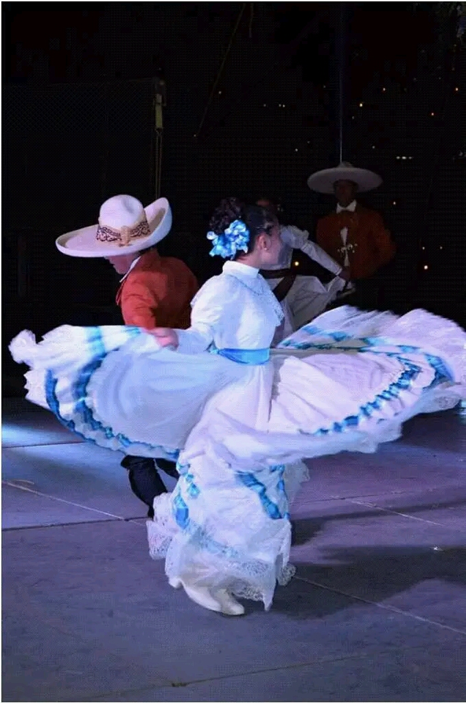
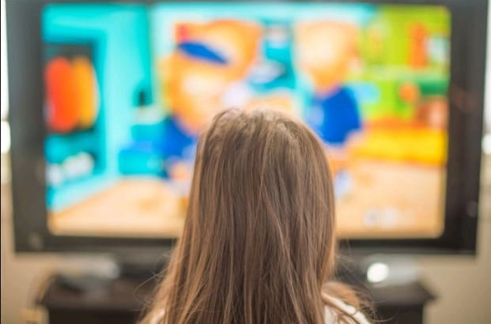
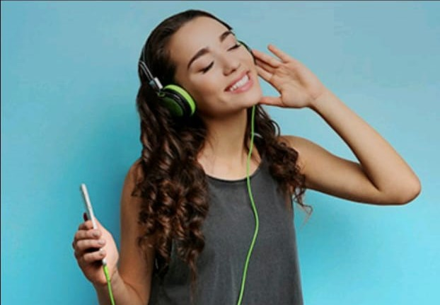

| ºN | Nombre | Imagen | Descripción |
|---|---|---|---|
| 1 | BAILAR |  | La danza folklórica es una de mis pasiones más grandes ya que en el año 2016 participamos en una fiesta patronal ,mis vecinos un día jugando nos pusimos a bailar. De ahí creamos un ballet dónde participamos puros niños menores de edad por el cual le pusimos (ballet infantil inquietos), entonces desde ese entonces supe que la danza folklórica era una de mis pasiones más grandes. Después de esa presentación en el 2016 se vinieron invitaciones para algunas festividades de mi pueblo incluso no solo hubieron invitaciones para mi pueblo si no hasta dar presentaciónes en varios pueblos vecinos. |
| 2 | Ver Televisión |  | Es un pasatiempo que cada que tengo tiempo y puedo veo la televisión, cada que veo tele me pongo a ver las noticias o la rosa de Guadalupe que concidero que es un poco buena ya que algunos casos tratan sobre lo que está pasando en el mundo . |
| 3 | Escuchar Música |  | La música también es uno de mis pasatiempos favoritos ya que cada que hago queaser o cualquier otra cosa pongo música por qué me siento más relajada y siento que me pone más activa y ando de aya para acá y no me distraigo tanto . |